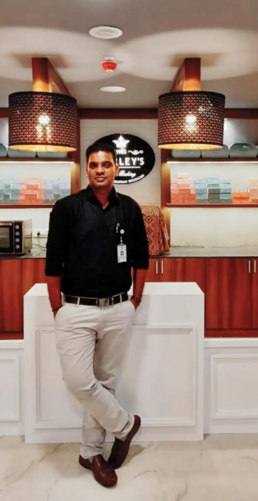
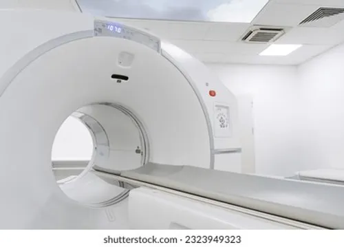
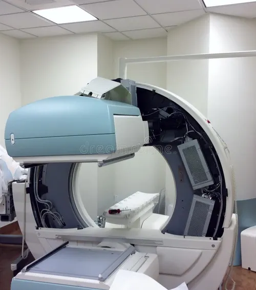
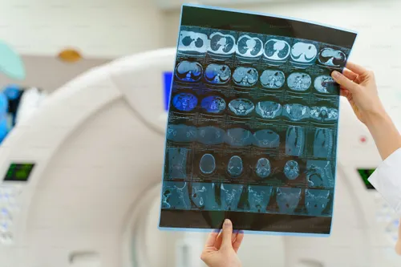

Experienced Nuclear Medicine Technologist with over 25 years of expertise in PET-CT imaging, Gamma Camera systems, radiopharmaceutical handling, diagnostics, and advanced nuclear medicine technologies.

Certified Nuclear Medicine Technologist registered with AERB, experienced in PET-CT imaging, SPECT-CT, Gamma Camera operations, radiopharmacy, patient diagnostics, and quality imaging procedures.



Senior Nuclear Medicine Technologist handling PET-CT imaging, diagnostics, radiopharmaceutical administration, and patient care.
Worked in PET-CT imaging technology and Gamma Camera department.
Extensive experience in Nuclear Medicine imaging and diagnostic procedures.
Prepared and administered FDG, F-18, Ga68, and I131 tracers.
Performed advanced imaging procedures for medical diagnosis.
Maintained records, reports, and imaging documentation.
Assisted and guided patients during diagnostic imaging procedures.